Создаём сияние здоровой улыбки
Под светом достижений медицинской науки
Новая стоматологическая клиника · Сочи, Виноградная, 55/1
Стоматология, в которой на вас есть время
«Академия улыбки» открылась в 2026 году. Современный кабинет, врач с одиннадцатилетней практикой и час на первый приём: осмотр, план лечения и ответы на вопросы — без спешки и лишних процедур.
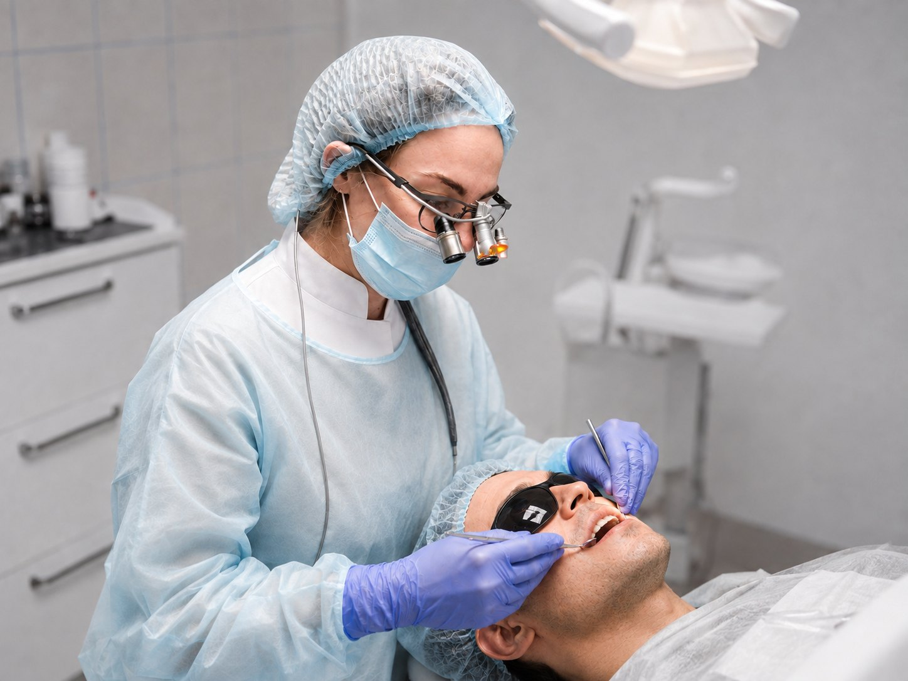
Что мы делаем
Шесть направлений — в одном кабинете
Диагностику, лечение, хирургию и протезирование ведёт один врач, и за результат отвечает один человек. Раскройте направление, чтобы увидеть самое востребованное; полный прейскурант — на отдельной странице.
Гигиена и профилактикаЧистка ультразвуком и Air Flow, фторирование, герметизация фиссур. Рекомендуем раз в полгода.
- Профессиональная гигиена, обе челюсти
- Фторирование и полировка
- Герметизация фиссур
Лечение зубов и каналовКариес, пульпит, перелечивание каналов. Работаем под увеличением и с изоляцией коффердамом.
- Реставрация кариеса
- Лечение каналов под увеличением
- Перелечивание после других клиник
Лечение дёсенКровоточивость, подвижность зубов, неприятный запах — диагностика и лечение пародонта.
- Карта пародонта
- Закрытый кюретаж
- Поддерживающая терапия
Хирургия и имплантацияУдаление любой сложности, имплантаты Osstem, Straumann и Nobel, костная пластика.
- Удаление зубов, в том числе мудрости
- Имплантация с коронкой
- Костная пластика и синус‑лифтинг
Коронки и протезированиеЦирконий и E‑max, цифровые слепки, коронки на имплантатах, съёмные протезы.
- Коронки из циркония
- Коронки на имплантатах
- Съёмные и условно‑съёмные протезы
ЭстетикаВиниры, отбеливание и цифровой макет улыбки с примеркой до обработки зубов.
- Виниры E‑max
- Цифровой макет улыбки
- Отбеливание в кабинете и дома
Первый визит
Гигиена и консультация — в один приём
После профессиональной гигиены врач видит зубы без налёта и камня: осмотр точнее, а план лечения короче. Новым пациентам предлагаем оба этапа одним визитом.
- Ультразвук, Air Flow, полировка, фторирование
- Осмотр и беседа — 60 минут
- Фотопротокол, письменный план и смета
- При необходимости — направление на КЛКТ
Сотрите камень курсором или возьмите наконечник.Сотрите камень пальцем.
Комплекс для новых пациентов
11 900 ₽14 900 ₽
Профессиональная гигиена обеих челюстей и первичная консультация с письменным планом лечения
Позвонить и записатьсяДля пациентов, впервые обратившихся в клинику. Не суммируется с другими акциями. черновик
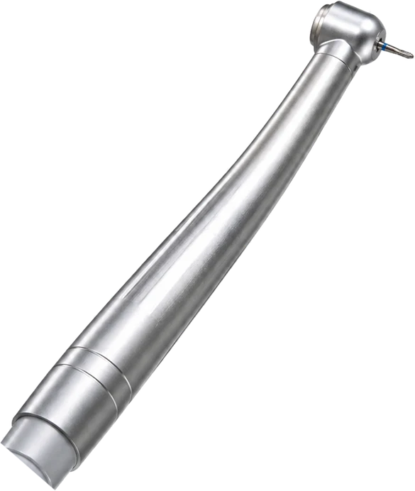
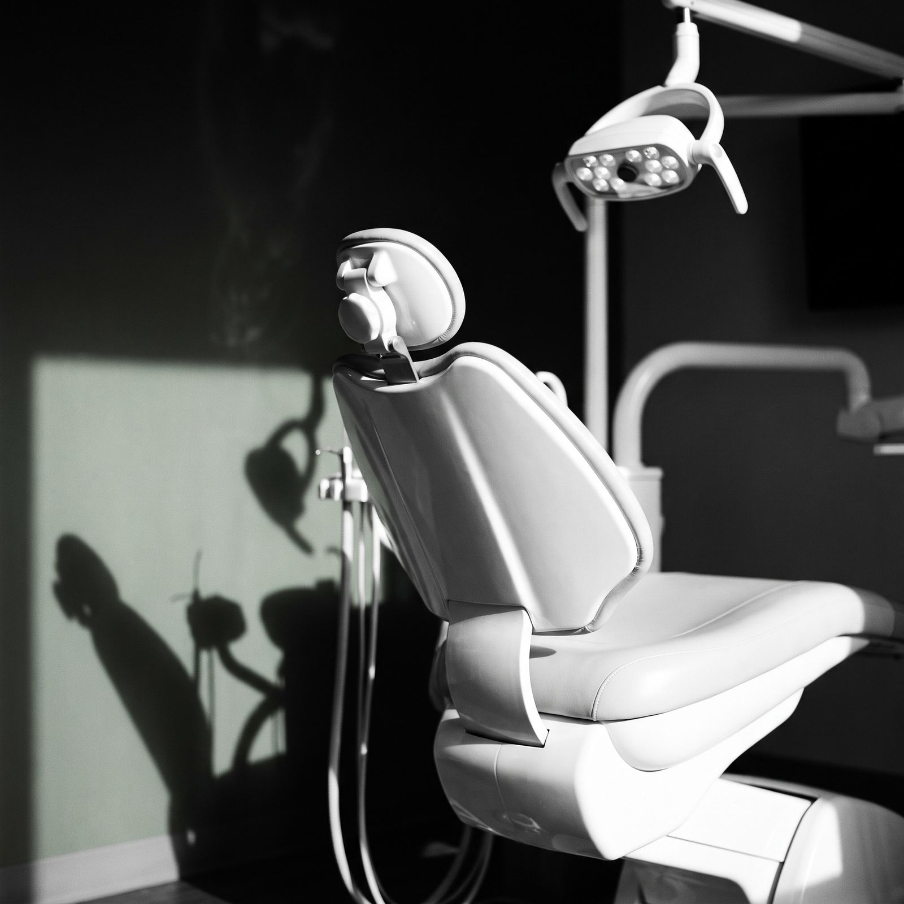
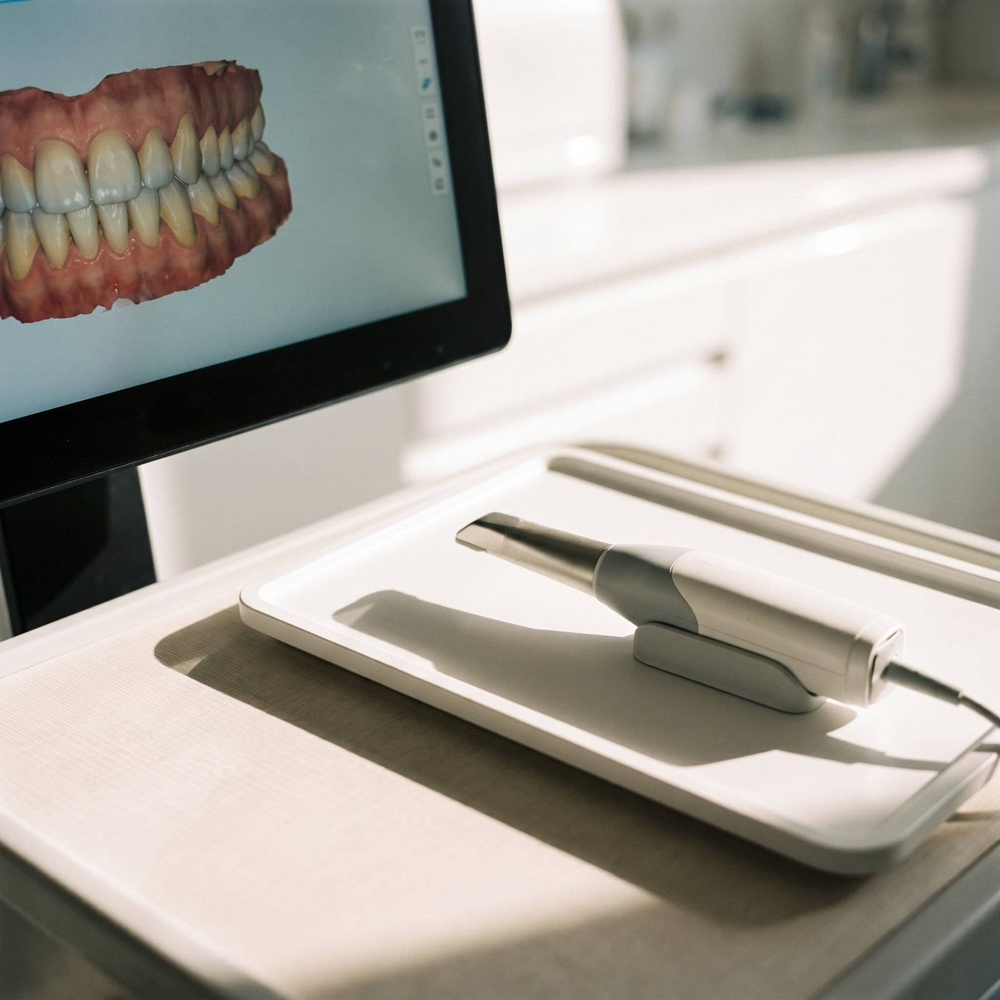
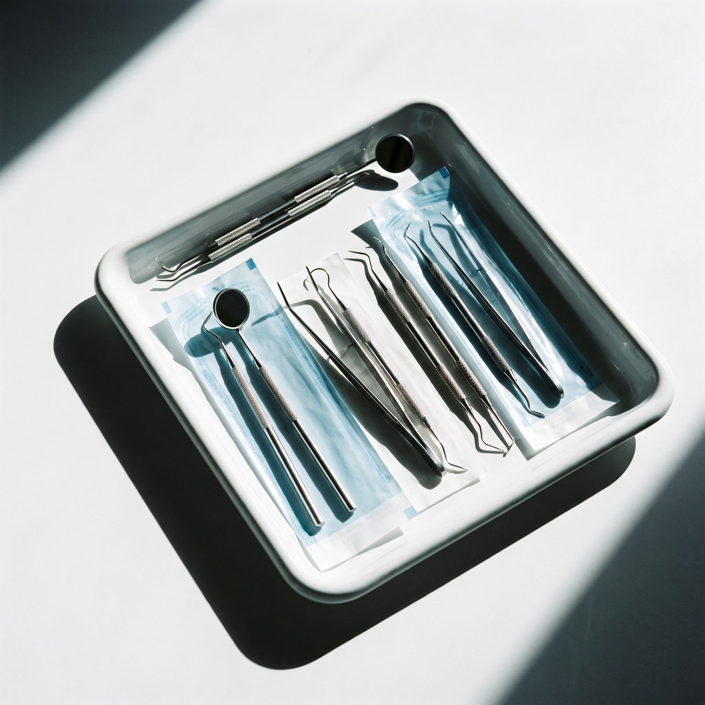
Материалы
Реставрация, которая служит десять лет и дольше
Современные композиты держатся десять лет и дольше — но только если аккуратно пройдены все этапы: подготовка эмали, промывание, послойная укладка, полимеризация калиброванной лампой и полировка края. Небрежность на любом из них — и пломба окажется недолговечной.
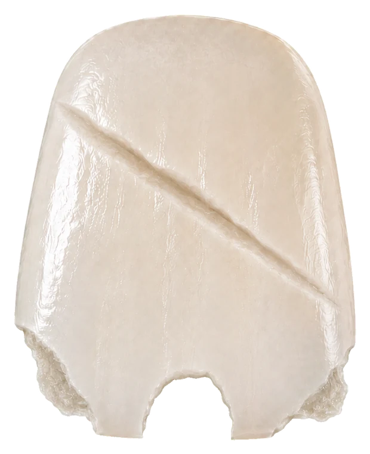
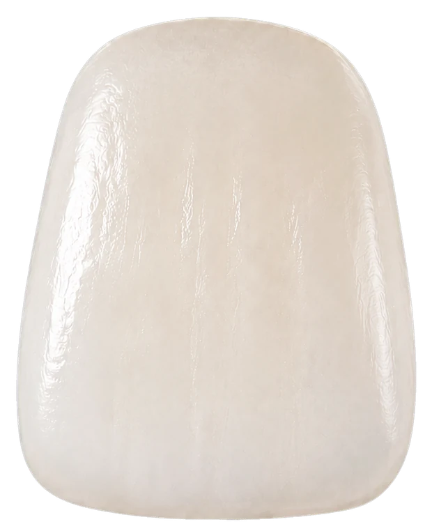
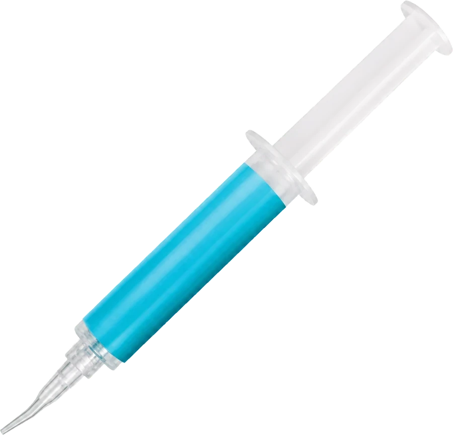
1Подготовка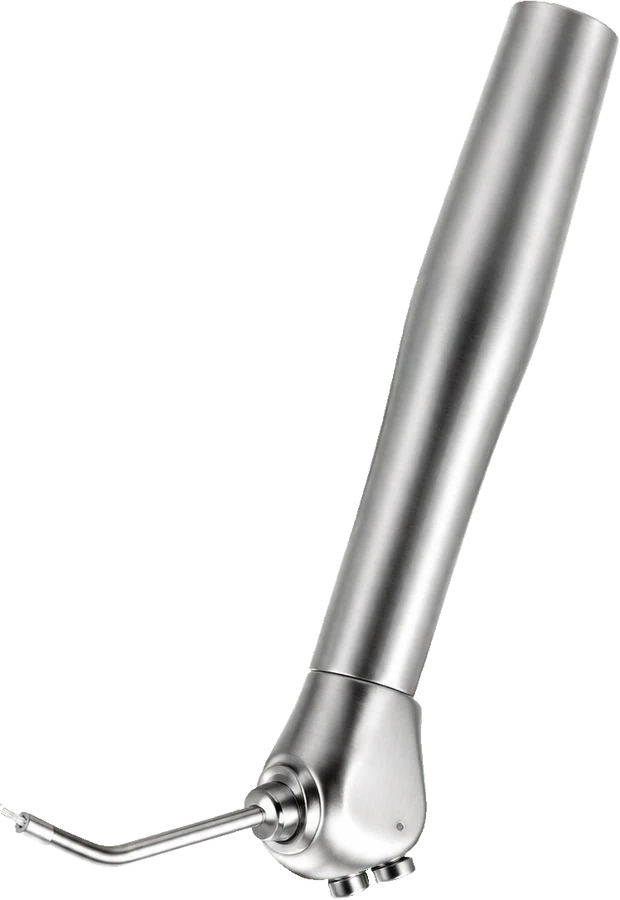
2Промывание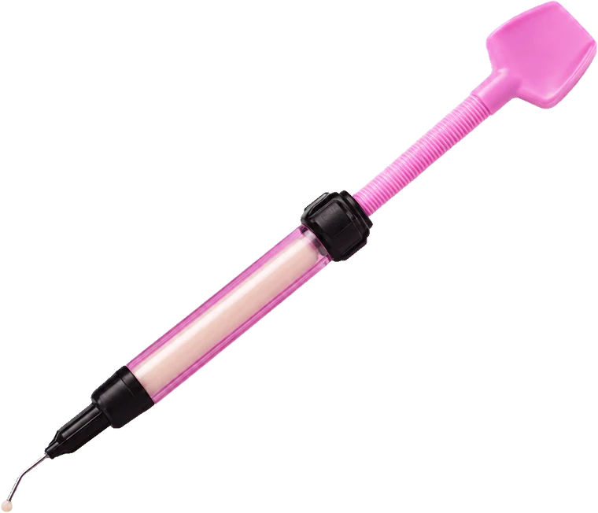
3Композит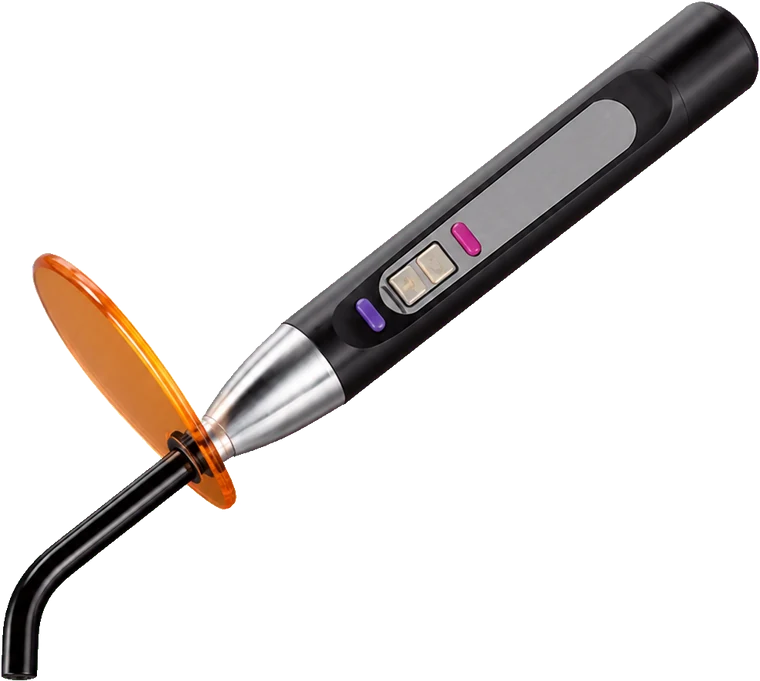
4Свет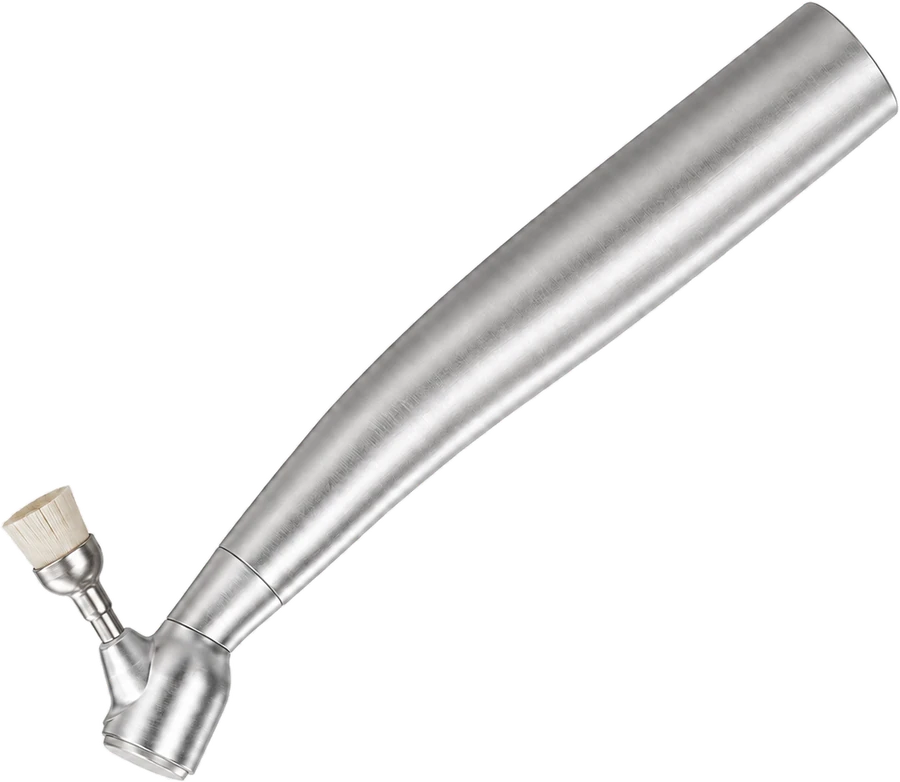
5ПолировкаГотово
ПЛОМБА‑10
Промокод на скидку 10 % на лечение кариеса для новых пациентов. Назовите его администратору или отправьте в сообщении. черновик условий
Получить скидку в WhatsAppКто ведёт приём
Белоусова Александра Сергеевна
Стоматолог‑терапевт, хирург, имплантолог. В практике с 2015 года. Основатель клиники и её главный врач: диагностику, лечение, удаление, имплантацию и протезирование пациент проходит у одного специалиста.
- Образование
- Новосибирский государственный медицинский университет, «Стоматология», 2015
- Стаж
- 11 лет
- Специализации
- Терапия, эндодонтия, пародонтология, хирургия, имплантация, ортопедия
- Аккредитация
- Свидетельство об аккредитации специалиста — реквизиты уточняются
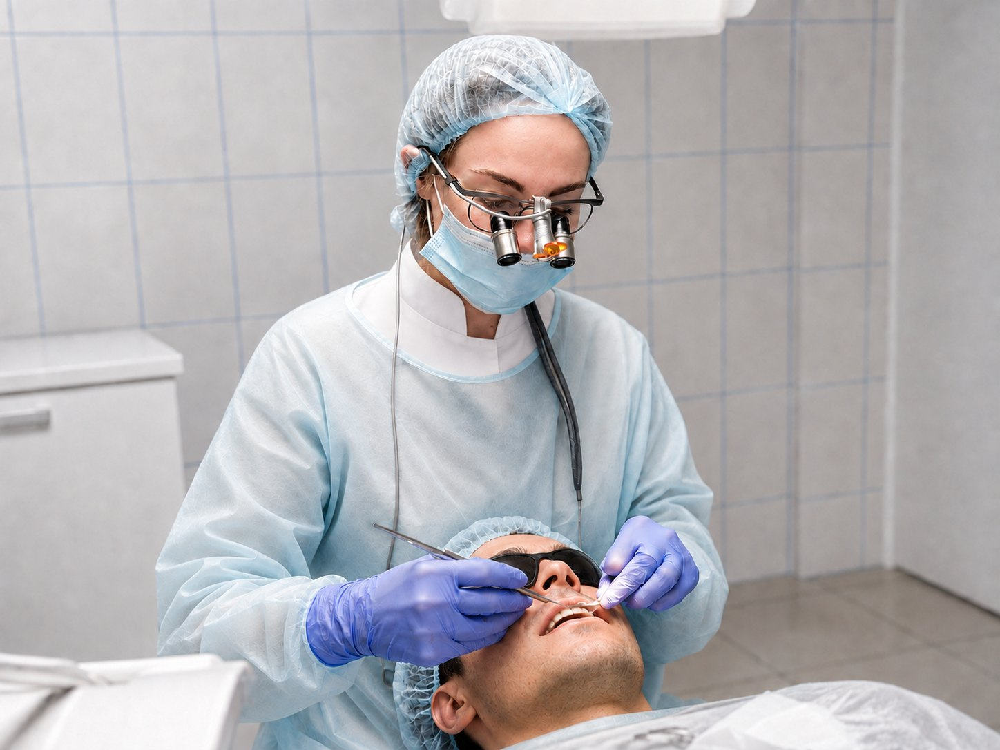

Отзывы
Что пишут пациенты
Диагнозы и подробности лечения не публикуем — это врачебная тайна.
Хожу к этому специалисту уже 10 лет. Раньше боялся стоматологов как огня, теперь хожу спокойно. Врач всегда всё объяснит простыми словами, ничего не навязывает. Если можно обойтись без сложного лечения — говорит честно.
Пришла к Александре по рекомендации. Очень внимательный и грамотный хирург-стоматолог-имплантолог. В самой клинике всё новое, чистое и современное.
Чувствуется огромный опыт, уверенность и искреннее желание помочь человеку, а не просто поставить галочку. После визита — уверенность, что здоровье в надёжных руках.
Высокий уровень профессионализма, всё быстро и качественно, рекомендую.
Стерильность
Набор инструментов — на одного пациента
Каждый набор проходит стерилизацию в автоклаве и хранится в упаковке до вашего приёма. Одноразовое — слюноотсосы, салфетки, перчатки, стаканы — утилизируется после каждого пациента.
Сложите инструменты в лоток — начнётся многоступенчатая стерилизация.
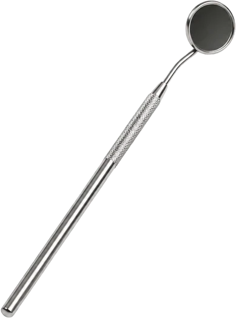
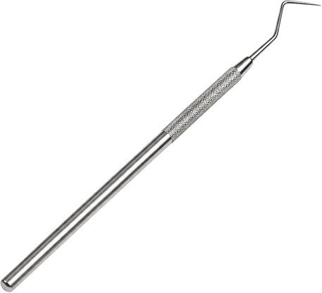
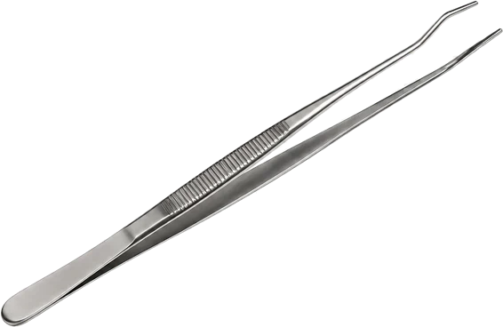
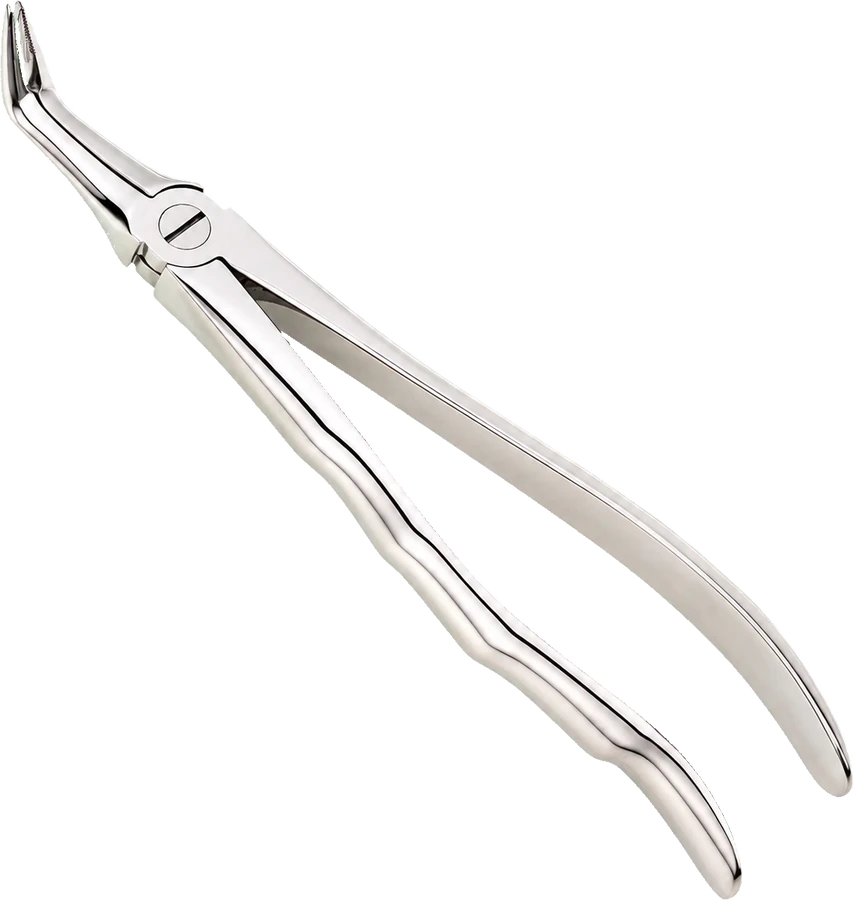
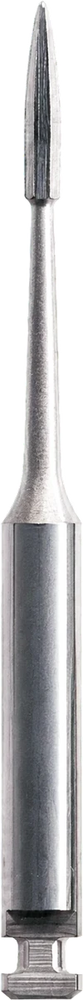
Вопросы и ответы
О чём чаще всего спрашивают
Отвечает Александра Белоусова, главный врач клиники. Полный список — на отдельной странице.
Как проходит первый визит?
Первичный приём длится около часа. Мы разговариваем о том, что беспокоит и чего вы ждёте, осматриваем полость рта, делаем фотопротокол и, если нужно, даём направление на снимок. В конце вы получаете письменный план лечения с этапами и стоимостью. Никаких процедур «заодно» в первый визит не делается — только по вашему решению.
Как часто нужна профессиональная чистка?
Большинству взрослых — раз в шесть месяцев. При заболеваниях дёсен, брекетах, имплантатах или курении — раз в три‑четыре месяца. Интервал врач назначает индивидуально после осмотра.
Что нельзя делать после чистки?
Два‑три часа не есть и не пить ничего, кроме воды. Сутки — без красящих продуктов: кофе, чай, красное вино, свёкла, соевый соус, ягоды. Сутки — без курения. Эмаль после чистки более восприимчива к пигментам.
Больно ли лечить зубы?
Лечение проходит под местной анестезией. Современные анестетики действуют через несколько минут и полностью убирают чувствительность на время процедуры. Если вы боитесь самого укола, скажите — место инъекции предварительно обезболивается гелем.
Обязательно ли удалять зубы мудрости?
Нет. Удаляют те, что растут неправильно, упираются в соседний зуб, регулярно воспаляются или не поддаются лечению. Здоровый, прорезавшийся и доступный для чистки зуб мудрости можно оставить.
Контакты
Виноградная, 55/1
- Адрес
- Сочи, ул. Виноградная, 55/1, пом. 22, 2‑й этаж
140 м от санатория «Радуга», есть парковка - Телефон
- +7 (989) 751‑28‑51
- Написать
- Часы работы
- По записи, часы уточняются
- Оплата
- Наличные, карта, QR‑код. Рассрочка — условия уточняются на приёме
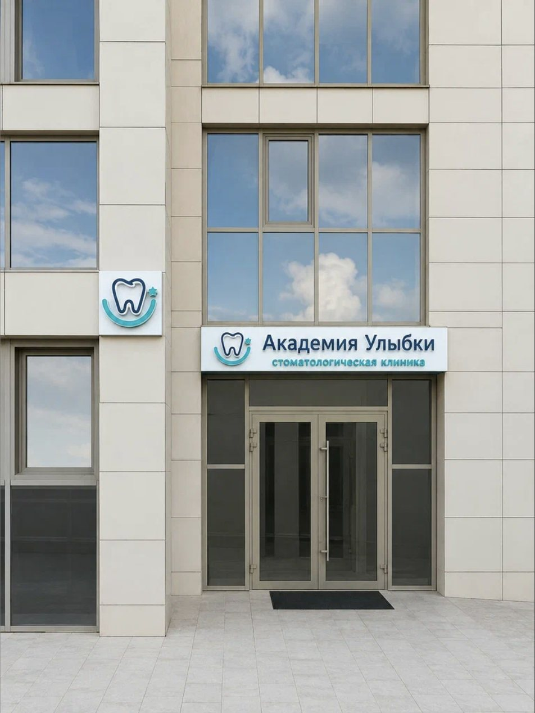